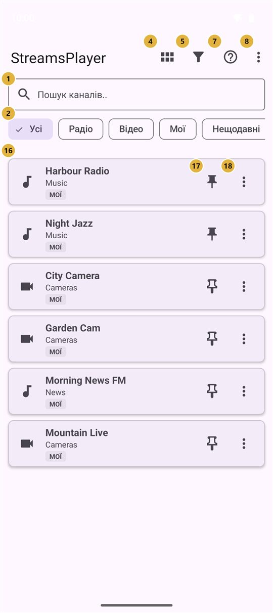
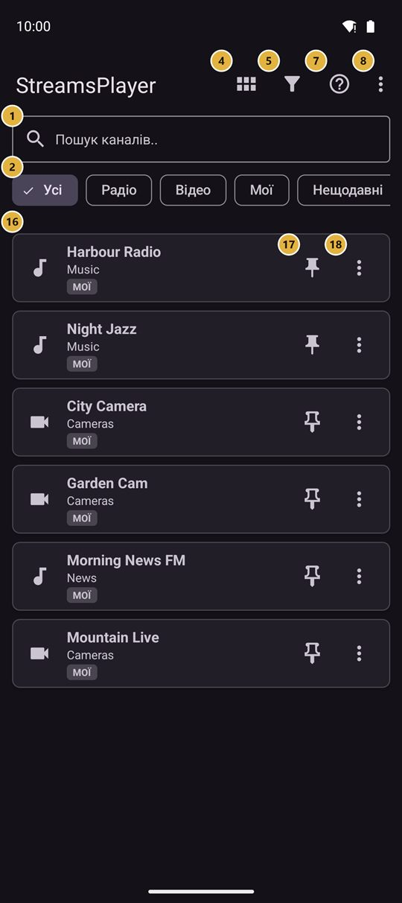

StreamsPlayer
Для чого цей екран
Головний екран: ваш список радіостанцій, відеопотоків і камер. Знайдіть канал, запустіть одним дотиком, тримайте улюблені вгорі та додавайте свої.


Порядок дій
- Знайдіть канал: введіть назву в полі пошуку 1 або звузьте список кнопками типів 2.
- Коли список довгий, відкрийте «Фільтр і сортування» 5: там колекція, категорія, мова й країна.
- Торкніться каналу 16, щоб відтворити його. Радіо грає тут-таки, і з'являється панель радіо 19; відео відкривається на весь екран.
- Закріплюйте канали, до яких повертаєтеся 17: вони лишаються вгорі списку.
- Додайте свою адресу кнопкою «Додати канал» 9 або цілий список через «Імпорт списку відтворення» 11.
Елементи
Пошук і фільтри
1Пошук каналів..Звужує список під час введення.
Шукає за назвою каналу. У списку лишаються лише відповідні канали, а задані фільтри продовжують діяти.
- Скасування
- Очистьте поле, і список знову буде повним.
- Сполучення клавіш
- Ctrl + F
2Усі, Радіо, Відео, Мої, НещодавніУсі, Радіо, Відео, Мої або Нещодавні.
Один дотик показує лише цей тип: радіостанції, відеопотоки, ваші власні канали або ті, що ви нещодавно запускали. «Усі» показує все. «Мої» спочатку перелічують прямі трансляції ваших інших пристроїв за пристроями, а потім збережені вами потоки.
- Скасування
- Виберіть «Усі».
3Скинути фільтриЗ'являється, коли ввімкнено фільтр або пошук.
Рядок над списком називає те, що зараз звужує список. Ця кнопка одразу прибирає фільтри й текст пошуку.
- Скасування
- Задайте фільтри знову у «Фільтрі і сортуванні».
Верхня панель
4Сітка / СписокПеремикає список між сіткою і списком.
На значку показано вигляд, який ви отримаєте. Вибір запам'ятовується.
- Скасування
- Торкніться значка ще раз.
5Фільтр і сортуванняВідкриває аркуш фільтра й сортування.
Звузьте список за колекцією, категорією, мовою й країною, залиште лише закріплені канали та виберіть порядок.
6Управління мовленнямВідкриває «Управління мовленням».
Перетворіть телефон на живу станцію: звук або ще й камера. Цей екран описано на окремій сторінці.
7ДовідкаВідкриває цю сторінку.
Ця кнопка є на кожному екрані, наприкінці верхньої панелі. Вона пояснює екран, на який ви дивитеся, не виводячи із застосунку й без мережі.
- Сполучення клавіш
- F1
Пункти меню
9Додати каналДодає одну адресу вручну.
Відкриває коротку форму: адреса, назва, тип потоку і категорія. Змінювати й видаляти можна канали, додані вручну.
10Нещодавні каналиКанали, які ви нещодавно запускали.
Відкриває список нещодавніх каналів. Торкніться каналу, щоб відтворити його; «Очистити нещодавні» спорожнює список.
- Скасування
- Очищення не можна скасувати.
11Імпорт списку відтворення (.m3u)Приносить канали зі списку відтворення за адресою.
Вставте адресу списку .m3u або .m3u8 і натисніть «Імпортувати». Канали з нього додадуться до вашого списку; наявні не дублюються.
12Імпорт трансляціїДодає пряму трансляцію чужого пристрою.
Вставте посилання або опис трансляції, виберіть файл .fmsbcast чи .json або відскануйте QR-код, який показує мовець. Трансляція з'явиться в списку як канал.
13Оновити каталогЗавантажує актуальний каталог каналів.
Оновлює готовий список станцій. Ваші канали й закріплення зберігаються. Після оновлення застосунок пропонує завантажити обкладинки каналів. У розділі «Мої» той самий пункт оновлює прямі трансляції ваших інших пристроїв.
14Обмін медіа та трансляціїВідкриває посібники в браузері.
Короткий список тем про обмін медіа та прямі трансляції. Кожна тема відкриває вебсторінку, тому потрібна мережа.
15Сервер обмінуВідкриває екран сервера обміну.
Тут ви входите на свій сервер обміну й бачите трансляції своїх інших пристроїв.
23НалаштуванняВідкриває налаштування.
Тема, мова, налаштування мовлення й усе про цей застосунок.
Канали
24Оновити список каналів?Пропонує список каналів, опублікований після вашого останнього оновлення.
Коли ви відкриваєте список, застосунок перевіряє, чи опубліковано новіший каталог каналів, і цей рядок з'являється над списком, лише якщо він є; на новому телефоні він пропонує перший список. «Оновити» завантажує його так само, як «Оновити каталог» у меню. «Закрити» прибирає рядок, і той самий список більше не пропонується, а опублікований пізніше - пропонується. «Налаштування > Основні > Оновлення списку каналів» визначає, чи перевіряє застосунок узагалі і чи оновлює він список сам через Wi-Fi.
- Скасування
- «Оновити каталог» у меню оновлює список будь-коли.
16Список каналівВаші канали, закріплені вгорі.
Торкніться рядка, щоб відтворити канал. У рядку видно назву, тип потоку і те, чи грає канал зараз. Зображення в рядку - прев'ю для відеоканалу, інакше логотип станції, інакше її маленький значок, інакше знак типу потоку. У сітці прев'ю або логотип займають всю ширину картки. Після оновлення каталогу застосунок пропонує завантажити прев'ю й логотипи, показуючи їхній розмір; «Пізніше» залишає все як є, і під час наступного оновлення запитання повториться. У розділі «Мої» рядок прямої трансляції показує пристрій і те, чи він у мережі; торкніться його, щоб слухати або дивитися, а «Зберегти» залишає його каналом. Довгий список прокручується; пошук і фільтри роблять його коротшим.
17ЗакріпитиТримає канал угорі списку.
Закріплений канал стоїть вище за решту в тому порядку, в якому ви закріплювали. Тією самою кнопкою його можна відкріпити.
- Скасування
- Торкніться шпильки ще раз.
18ЩеВідкриває дії для одного каналу.
Відтворити, закріпити чи відкріпити, поділитися адресою, скопіювати адресу, а для доданих вами каналів ще й редагувати та видаляти. З апаратною клавіатурою те саме роблять клавіша Menu або Shift+F10.
- Сполучення клавіш
- Shift + F10
Мої
21Стан розділу «Мої»Показує, чи актуальний список ваших інших пристроїв.
У розділі «Мої» цей рядок показує, коли список прямих трансляцій востаннє оновлювався, що це останній відомий список або чому його не можна показати. Кнопка поруч називається «Повторити», «Налаштувати» або «Увійти» - яка підходить.
22ОновитиЗапитує в сервера обміну поточні трансляції.
Завантажує прямі трансляції ваших інших пристроїв заново. Збережені потоки і те, що грає, лишаються як є, а загальний каталог каналів не завантажується.
Панель радіо
19Панель радіоКерує радіо, що грає.
Показує станцію й має кнопки відтворення, паузи та закриття. Радіо продовжує грати, коли ви виходите із застосунку; закриття панелі зупиняє його.
- Скасування
- Торкніться радіоканалу в списку, щоб запустити його знову.
20Таймер снуЗупиняє радіо за вибраний час.
Відкриває аркуш із готовими значеннями від 15 до 60 хвилин і власним часом. Поки таймер іде, на кнопці видно хвилини, що лишилися. «Скасувати таймер» вимикає його.
- Скасування
- Відкрийте аркуш і виберіть «Скасувати таймер».